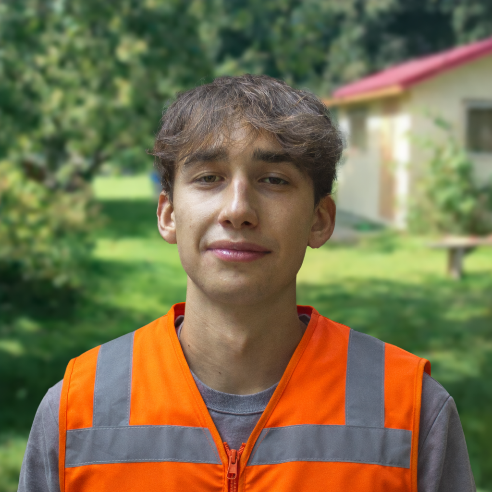

Сергей Журавлёв
Директор
Первомайские железные дороги

Директор

Точной даты, и даже года создания Первомайских железных дорог назвать невозможно. В этот период эксплуатировался различный железнодорожный транспорт от "поездов метро" до "трамваев". Не было определенных стандартов и общей системы. Основными инструментами была тачка и подушка, чтобы пассажиру было помягче. Иногда приходилось играться с дополнительными модификациями, например лежащего стула, который создавал стенку, и помогал отделить грузовой отсек от пассажирского места. В редких случаях удавалось ставить даже радио Makita. Основным бортовым питанием в то время были различные ягоды с участка такие как красная и черная смородина, а также печеньки и конфеты. На сохранившемся с тех времен фото запечатлена учебная авария "трамвая" с велосипедом.
В этот период на Первомайских железных дорогах был кризис в связи с пандемией COVID-19. Первомайские железные дороги не функционировали, однако в этот период приобреталось много знаний в железнодорожной и транспортной отрасли, которые в будущем сильно помогли в развитии.

На зиму были заготовлены бумажные знаки, билеты, расписание и другое, однако планы остались не реализованными так как на улице было холодно и хотелось слепить что-то из снега.
Самой большой разработкой стал экран, который показывал время до следующего отправления. Была даже озвучка, которая предупреждала о скором отправлении поезда голосом.

Этим летом были большие планы, однако они к сожалению не были до конца реализованы из-за слишком большого объёма работ и недостаточном спросе. Тем не менее этот год был очень насыщен новыми знаниями, полученными как через теорию так и через практику на настоящих железных дорогах с колеей 1520мм. На фотографии символ этого лета - светофоры, которые в итоге так и не были использованы.
Здесь